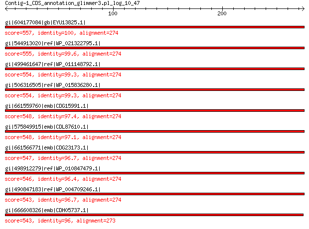

bitscore colors: <40, 40-50 , 50-80, 80-200, >200
 BLASTP 2.2.31+
Reference: Stephen F. Altschul, Thomas L. Madden, Alejandro A.
Schaffer, Jinghui Zhang, Zheng Zhang, Webb Miller, and David J.
Lipman (1997), "Gapped BLAST and PSI-BLAST: a new generation of
protein database search programs", Nucleic Acids Res. 25:3389-3402.
Reference for composition-based statistics: Alejandro A. Schaffer,
L. Aravind, Thomas L. Madden, Sergei Shavirin, John L. Spouge, Yuri
I. Wolf, Eugene V. Koonin, and Stephen F. Altschul (2001),
"Improving the accuracy of PSI-BLAST protein database searches with
composition-based statistics and other refinements", Nucleic Acids
Res. 29:2994-3005.
Database: All non-redundant GenBank CDS translations+PDB+SwissProt+PIR+PRF
excluding environmental samples from WGS projects
49,011,213 sequences; 17,563,301,199 total letters
Query= Contig-1_CDS_annotation_glimmer3.pl_log_10_47
Length=274
Score E
Sequences producing significant alignments: (Bits) Value
gi|604177084|gb|EYU13825.1| LSU ribosomal protein L2P 557 0.0
gi|544913020|ref|WP_021322795.1| 50S ribosomal protein L2 555 0.0
gi|499461647|ref|WP_011148792.1| 50S ribosomal protein L2 554 0.0
gi|506316505|ref|WP_015836280.1| 50S ribosomal protein L2 554 0.0
gi|661559760|emb|CDG15991.1| 50S ribosomal protein L2 548 0.0
gi|575849915|emb|CDL87610.1| 50S ribosomal protein L2 548 0.0
gi|661566771|emb|CDG23173.1| 50S ribosomal protein L2 547 0.0
gi|498912279|ref|WP_010847479.1| 50S ribosomal protein L2 546 0.0
gi|490847183|ref|WP_004709246.1| MULTISPECIES: 50S ribosomal pro... 543 0.0
gi|666608326|emb|CDH05737.1| 50S ribosomal subunit protein L2 543 0.0
>gi|604177084|gb|EYU13825.1| LSU ribosomal protein L2P [Photorhabdus luminescens BA1]
Length=274
Score = 557 bits (1436), Expect = 0.0, Method: Compositional matrix adjust.
Identities = 274/274 (100%), Positives = 274/274 (100%), Gaps = 0/274 (0%)
Query 1 MAIVKCKPTSPGRRHVVKVVNPELHKGKPYAPLLEKSSKTGGRNNNGRITTRHIGGGHKQ 60
MAIVKCKPTSPGRRHVVKVVNPELHKGKPYAPLLEKSSKTGGRNNNGRITTRHIGGGHKQ
Sbjct 1 MAIVKCKPTSPGRRHVVKVVNPELHKGKPYAPLLEKSSKTGGRNNNGRITTRHIGGGHKQ 60
Query 61 HYRLIDFKRNKDGIPAVVERLEYDPNRSANIALVLYKDGERRYILAPKGLKAGDQIQSGA 120
HYRLIDFKRNKDGIPAVVERLEYDPNRSANIALVLYKDGERRYILAPKGLKAGDQIQSGA
Sbjct 61 HYRLIDFKRNKDGIPAVVERLEYDPNRSANIALVLYKDGERRYILAPKGLKAGDQIQSGA 120
Query 121 DAAIKTGNALPMRNIPVGSTVHNVEMKPGKGGQLARSAGAYVQIVARDGSYVTLRLRSGE 180
DAAIKTGNALPMRNIPVGSTVHNVEMKPGKGGQLARSAGAYVQIVARDGSYVTLRLRSGE
Sbjct 121 DAAIKTGNALPMRNIPVGSTVHNVEMKPGKGGQLARSAGAYVQIVARDGSYVTLRLRSGE 180
Query 181 MRKVLSDCRATLGEVGNAEHMLRVLGKAGASRWRGIRPTVRGTAMNPVDHPHGGGEGRNF 240
MRKVLSDCRATLGEVGNAEHMLRVLGKAGASRWRGIRPTVRGTAMNPVDHPHGGGEGRNF
Sbjct 181 MRKVLSDCRATLGEVGNAEHMLRVLGKAGASRWRGIRPTVRGTAMNPVDHPHGGGEGRNF 240
Query 241 GKHPVTPWGVQTKGKKTRSNKRTDQFIVRRRTKK 274
GKHPVTPWGVQTKGKKTRSNKRTDQFIVRRRTKK
Sbjct 241 GKHPVTPWGVQTKGKKTRSNKRTDQFIVRRRTKK 274
>gi|544913020|ref|WP_021322795.1| 50S ribosomal protein L2 [Photorhabdus temperata]
gi|530711218|gb|EQC02079.1| 50S ribosomal protein L2 [Photorhabdus temperata subsp. temperata
M1021]
gi|550875214|gb|ERT14247.1| 50S ribosomal protein L2 [Photorhabdus temperata J3]
gi|572731294|gb|ETS29483.1| LSU ribosomal protein L2P [Photorhabdus temperata subsp. khanii
NC19]
gi|662546825|gb|KER01463.1| LSU ribosomal protein L2P [Photorhabdus temperata subsp. temperata
Meg1]
Length=274
Score = 555 bits (1431), Expect = 0.0, Method: Compositional matrix adjust.
Identities = 273/274 (99%), Positives = 273/274 (99%), Gaps = 0/274 (0%)
Query 1 MAIVKCKPTSPGRRHVVKVVNPELHKGKPYAPLLEKSSKTGGRNNNGRITTRHIGGGHKQ 60
MAIVKCKPTSPGRRHVVKVVNPELHKGKPYAPLLEKSSKTGGRNNNGRITTRHIGGGHKQ
Sbjct 1 MAIVKCKPTSPGRRHVVKVVNPELHKGKPYAPLLEKSSKTGGRNNNGRITTRHIGGGHKQ 60
Query 61 HYRLIDFKRNKDGIPAVVERLEYDPNRSANIALVLYKDGERRYILAPKGLKAGDQIQSGA 120
HYRLIDFKRNKDGIPAVVERLEYDPNRSANIALVLYKDGERRYILAPKGLKAGDQIQSGA
Sbjct 61 HYRLIDFKRNKDGIPAVVERLEYDPNRSANIALVLYKDGERRYILAPKGLKAGDQIQSGA 120
Query 121 DAAIKTGNALPMRNIPVGSTVHNVEMKPGKGGQLARSAGAYVQIVARDGSYVTLRLRSGE 180
DAAIK GNALPMRNIPVGSTVHNVEMKPGKGGQLARSAGAYVQIVARDGSYVTLRLRSGE
Sbjct 121 DAAIKAGNALPMRNIPVGSTVHNVEMKPGKGGQLARSAGAYVQIVARDGSYVTLRLRSGE 180
Query 181 MRKVLSDCRATLGEVGNAEHMLRVLGKAGASRWRGIRPTVRGTAMNPVDHPHGGGEGRNF 240
MRKVLSDCRATLGEVGNAEHMLRVLGKAGASRWRGIRPTVRGTAMNPVDHPHGGGEGRNF
Sbjct 181 MRKVLSDCRATLGEVGNAEHMLRVLGKAGASRWRGIRPTVRGTAMNPVDHPHGGGEGRNF 240
Query 241 GKHPVTPWGVQTKGKKTRSNKRTDQFIVRRRTKK 274
GKHPVTPWGVQTKGKKTRSNKRTDQFIVRRRTKK
Sbjct 241 GKHPVTPWGVQTKGKKTRSNKRTDQFIVRRRTKK 274
>gi|499461647|ref|WP_011148792.1| 50S ribosomal protein L2 [Photorhabdus luminescens]
gi|37528540|ref|NP_931885.1| 50S ribosomal protein L2 [Photorhabdus luminescens subsp. laumondii
TTO1]
gi|42559197|sp|Q7MYF4.1|RL2_PHOLL RecName: Full=50S ribosomal protein L2 [Photorhabdus luminescens
subsp. laumondii TTO1]
gi|36787978|emb|CAE17095.1| 50S ribosomal protein L2 [Photorhabdus luminescens subsp. laumondii
TTO1]
Length=274
Score = 554 bits (1427), Expect = 0.0, Method: Compositional matrix adjust.
Identities = 272/274 (99%), Positives = 273/274 (99%), Gaps = 0/274 (0%)
Query 1 MAIVKCKPTSPGRRHVVKVVNPELHKGKPYAPLLEKSSKTGGRNNNGRITTRHIGGGHKQ 60
MAIVKCKPTSPGRRHVVKVVNPELHKGKPYAPLLEKSSKTGGRNNNGRITTRHIGGGHKQ
Sbjct 1 MAIVKCKPTSPGRRHVVKVVNPELHKGKPYAPLLEKSSKTGGRNNNGRITTRHIGGGHKQ 60
Query 61 HYRLIDFKRNKDGIPAVVERLEYDPNRSANIALVLYKDGERRYILAPKGLKAGDQIQSGA 120
HYRLIDFKRNKDGIPAVVERLEYDPNRSANIALVLYKDGERRYILAPKGLKAGDQIQSG
Sbjct 61 HYRLIDFKRNKDGIPAVVERLEYDPNRSANIALVLYKDGERRYILAPKGLKAGDQIQSGV 120
Query 121 DAAIKTGNALPMRNIPVGSTVHNVEMKPGKGGQLARSAGAYVQIVARDGSYVTLRLRSGE 180
DA+IKTGNALPMRNIPVGSTVHNVEMKPGKGGQLARSAGAYVQIVARDGSYVTLRLRSGE
Sbjct 121 DASIKTGNALPMRNIPVGSTVHNVEMKPGKGGQLARSAGAYVQIVARDGSYVTLRLRSGE 180
Query 181 MRKVLSDCRATLGEVGNAEHMLRVLGKAGASRWRGIRPTVRGTAMNPVDHPHGGGEGRNF 240
MRKVLSDCRATLGEVGNAEHMLRVLGKAGASRWRGIRPTVRGTAMNPVDHPHGGGEGRNF
Sbjct 181 MRKVLSDCRATLGEVGNAEHMLRVLGKAGASRWRGIRPTVRGTAMNPVDHPHGGGEGRNF 240
Query 241 GKHPVTPWGVQTKGKKTRSNKRTDQFIVRRRTKK 274
GKHPVTPWGVQTKGKKTRSNKRTDQFIVRRRTKK
Sbjct 241 GKHPVTPWGVQTKGKKTRSNKRTDQFIVRRRTKK 274
>gi|506316505|ref|WP_015836280.1| 50S ribosomal protein L2 [Photorhabdus asymbiotica]
gi|253991685|ref|YP_003043041.1| 50S ribosomal protein L2 [Photorhabdus asymbiotica]
gi|253783135|emb|CAQ86300.1| 50S ribosomal protein L2 [Photorhabdus asymbiotica]
Length=274
Score = 554 bits (1427), Expect = 0.0, Method: Compositional matrix adjust.
Identities = 272/274 (99%), Positives = 273/274 (99%), Gaps = 0/274 (0%)
Query 1 MAIVKCKPTSPGRRHVVKVVNPELHKGKPYAPLLEKSSKTGGRNNNGRITTRHIGGGHKQ 60
MAIVKCKPTSPGRRHVVKVVNPELHKGKPYAPLLEK+SKTGGRNNNGRITTRHIGGGHKQ
Sbjct 1 MAIVKCKPTSPGRRHVVKVVNPELHKGKPYAPLLEKNSKTGGRNNNGRITTRHIGGGHKQ 60
Query 61 HYRLIDFKRNKDGIPAVVERLEYDPNRSANIALVLYKDGERRYILAPKGLKAGDQIQSGA 120
HYRLIDFKRNKDGIPAVVERLEYDPNRSANIALVLYKDGERRYILAPKGLKAGDQIQSGA
Sbjct 61 HYRLIDFKRNKDGIPAVVERLEYDPNRSANIALVLYKDGERRYILAPKGLKAGDQIQSGA 120
Query 121 DAAIKTGNALPMRNIPVGSTVHNVEMKPGKGGQLARSAGAYVQIVARDGSYVTLRLRSGE 180
DAAIK GNALPMRNIPVGSTVHNVEMKPGKGGQLARSAGAYVQIVARDGSYVTLRLRSGE
Sbjct 121 DAAIKAGNALPMRNIPVGSTVHNVEMKPGKGGQLARSAGAYVQIVARDGSYVTLRLRSGE 180
Query 181 MRKVLSDCRATLGEVGNAEHMLRVLGKAGASRWRGIRPTVRGTAMNPVDHPHGGGEGRNF 240
MRKVLSDCRATLGEVGNAEHMLRVLGKAGASRWRGIRPTVRGTAMNPVDHPHGGGEGRNF
Sbjct 181 MRKVLSDCRATLGEVGNAEHMLRVLGKAGASRWRGIRPTVRGTAMNPVDHPHGGGEGRNF 240
Query 241 GKHPVTPWGVQTKGKKTRSNKRTDQFIVRRRTKK 274
GKHPVTPWGVQTKGKKTRSNKRTDQFIVRRRTKK
Sbjct 241 GKHPVTPWGVQTKGKKTRSNKRTDQFIVRRRTKK 274
>gi|661559760|emb|CDG15991.1| 50S ribosomal protein L2 [Xenorhabdus doucetiae]
Length=274
Score = 548 bits (1412), Expect = 0.0, Method: Compositional matrix adjust.
Identities = 267/274 (97%), Positives = 272/274 (99%), Gaps = 0/274 (0%)
Query 1 MAIVKCKPTSPGRRHVVKVVNPELHKGKPYAPLLEKSSKTGGRNNNGRITTRHIGGGHKQ 60
MAIVKCKPTSPGRRHVVKVVNPELHKGKPYAPLLEK+SKTGGRNNNGRITTRHIGGGHKQ
Sbjct 1 MAIVKCKPTSPGRRHVVKVVNPELHKGKPYAPLLEKNSKTGGRNNNGRITTRHIGGGHKQ 60
Query 61 HYRLIDFKRNKDGIPAVVERLEYDPNRSANIALVLYKDGERRYILAPKGLKAGDQIQSGA 120
HYRLIDFKRNKDGIPAVVERLEYDPNRSANIALVLYKDGERRYILAPKGLKAGDQIQSGA
Sbjct 61 HYRLIDFKRNKDGIPAVVERLEYDPNRSANIALVLYKDGERRYILAPKGLKAGDQIQSGA 120
Query 121 DAAIKTGNALPMRNIPVGSTVHNVEMKPGKGGQLARSAGAYVQIVARDGSYVTLRLRSGE 180
D+AIKTGN LPMRNIPVGSTVHN+EMKPGKGGQLARSAGAY QIVARDGSYVTLRLRSGE
Sbjct 121 DSAIKTGNTLPMRNIPVGSTVHNIEMKPGKGGQLARSAGAYAQIVARDGSYVTLRLRSGE 180
Query 181 MRKVLSDCRATLGEVGNAEHMLRVLGKAGASRWRGIRPTVRGTAMNPVDHPHGGGEGRNF 240
MRKVLSDCRATLGEVGNAEHMLRVLGKAGASRWRGIRPTVRGTAMNPVDHPHGGGEGRNF
Sbjct 181 MRKVLSDCRATLGEVGNAEHMLRVLGKAGASRWRGIRPTVRGTAMNPVDHPHGGGEGRNF 240
Query 241 GKHPVTPWGVQTKGKKTRSNKRTDQFIVRRRTKK 274
GKHPVTPWGVQTKGKKTRSNKRTDQ+IVRRR+KK
Sbjct 241 GKHPVTPWGVQTKGKKTRSNKRTDQYIVRRRSKK 274
>gi|575849915|emb|CDL87610.1| 50S ribosomal protein L2 [Xenorhabdus cabanillasii JM26]
Length=274
Score = 548 bits (1411), Expect = 0.0, Method: Compositional matrix adjust.
Identities = 266/274 (97%), Positives = 273/274 (99%), Gaps = 0/274 (0%)
Query 1 MAIVKCKPTSPGRRHVVKVVNPELHKGKPYAPLLEKSSKTGGRNNNGRITTRHIGGGHKQ 60
MAIVKCKPTSPGRRHVVKVVNPELHKGKPYAPLLEK+SKTGGRNNNGRITTRHIGGGHKQ
Sbjct 1 MAIVKCKPTSPGRRHVVKVVNPELHKGKPYAPLLEKNSKTGGRNNNGRITTRHIGGGHKQ 60
Query 61 HYRLIDFKRNKDGIPAVVERLEYDPNRSANIALVLYKDGERRYILAPKGLKAGDQIQSGA 120
HYRLIDFKRNKDGIPAVVERLEYDPNRSANIALVLYKDGERRYILAPKGLKAGDQIQSGA
Sbjct 61 HYRLIDFKRNKDGIPAVVERLEYDPNRSANIALVLYKDGERRYILAPKGLKAGDQIQSGA 120
Query 121 DAAIKTGNALPMRNIPVGSTVHNVEMKPGKGGQLARSAGAYVQIVARDGSYVTLRLRSGE 180
D+AIKTGNALPMRNIPVGSTVHN+EMKPGKGGQLARSAGAY QIVARDGSYVTLRLRSGE
Sbjct 121 DSAIKTGNALPMRNIPVGSTVHNIEMKPGKGGQLARSAGAYAQIVARDGSYVTLRLRSGE 180
Query 181 MRKVLSDCRATLGEVGNAEHMLRVLGKAGASRWRGIRPTVRGTAMNPVDHPHGGGEGRNF 240
MRKVLSDCRATLGEVGNAEHMLRVLGKAGA+RWRGIRPTVRGTAMNPVDHPHGGGEGRNF
Sbjct 181 MRKVLSDCRATLGEVGNAEHMLRVLGKAGANRWRGIRPTVRGTAMNPVDHPHGGGEGRNF 240
Query 241 GKHPVTPWGVQTKGKKTRSNKRTDQFIVRRRTKK 274
GKHPVTPWG+QTKGKKTRSNKRTDQ+IVRRR+KK
Sbjct 241 GKHPVTPWGIQTKGKKTRSNKRTDQYIVRRRSKK 274
>gi|661566771|emb|CDG23173.1| 50S ribosomal protein L2 [Xenorhabdus poinarii G6]
Length=274
Score = 547 bits (1410), Expect = 0.0, Method: Compositional matrix adjust.
Identities = 265/274 (97%), Positives = 272/274 (99%), Gaps = 0/274 (0%)
Query 1 MAIVKCKPTSPGRRHVVKVVNPELHKGKPYAPLLEKSSKTGGRNNNGRITTRHIGGGHKQ 60
MAIVKCKPTSPGRRHVVKVVNPELHKGKPYAPLLEK+SKTGGRNNNGRITTRHIGGGHKQ
Sbjct 1 MAIVKCKPTSPGRRHVVKVVNPELHKGKPYAPLLEKNSKTGGRNNNGRITTRHIGGGHKQ 60
Query 61 HYRLIDFKRNKDGIPAVVERLEYDPNRSANIALVLYKDGERRYILAPKGLKAGDQIQSGA 120
HYRL+DFKRNKDGIPAVVERLEYDPNRSANIALVLYKDGERRYILAPKGLKAGDQIQSGA
Sbjct 61 HYRLVDFKRNKDGIPAVVERLEYDPNRSANIALVLYKDGERRYILAPKGLKAGDQIQSGA 120
Query 121 DAAIKTGNALPMRNIPVGSTVHNVEMKPGKGGQLARSAGAYVQIVARDGSYVTLRLRSGE 180
D+AIKTGN LPMRNIPVGSTVHN+EMKPGKGGQLARSAGAY QIVARDGSYVTLRLRSGE
Sbjct 121 DSAIKTGNTLPMRNIPVGSTVHNIEMKPGKGGQLARSAGAYAQIVARDGSYVTLRLRSGE 180
Query 181 MRKVLSDCRATLGEVGNAEHMLRVLGKAGASRWRGIRPTVRGTAMNPVDHPHGGGEGRNF 240
MRKVLSDCRATLGEVGNAEHMLRVLGKAGASRWRGIRPTVRGTAMNPVDHPHGGGEGRNF
Sbjct 181 MRKVLSDCRATLGEVGNAEHMLRVLGKAGASRWRGIRPTVRGTAMNPVDHPHGGGEGRNF 240
Query 241 GKHPVTPWGVQTKGKKTRSNKRTDQFIVRRRTKK 274
GKHPVTPWG+QTKGKKTRSNKRTDQ+IVRRR+KK
Sbjct 241 GKHPVTPWGIQTKGKKTRSNKRTDQYIVRRRSKK 274
>gi|498912279|ref|WP_010847479.1| 50S ribosomal protein L2 [Xenorhabdus nematophila]
gi|300721368|ref|YP_003710639.1| 50S ribosomal protein L2 [Xenorhabdus nematophila ATCC 19061]
gi|297627856|emb|CBJ88402.1| 50S ribosomal subunit protein L2 [Xenorhabdus nematophila ATCC
19061]
gi|484362890|emb|CCW30279.1| 50S ribosomal protein L2 [Xenorhabdus nematophila F1]
Length=274
Score = 546 bits (1406), Expect = 0.0, Method: Compositional matrix adjust.
Identities = 264/274 (96%), Positives = 272/274 (99%), Gaps = 0/274 (0%)
Query 1 MAIVKCKPTSPGRRHVVKVVNPELHKGKPYAPLLEKSSKTGGRNNNGRITTRHIGGGHKQ 60
MA+VKCKPTSPGRRHVVKVVNPELHKGKPYAPLLEK++KTGGRNNNGRITTRHIGGGHKQ
Sbjct 1 MAVVKCKPTSPGRRHVVKVVNPELHKGKPYAPLLEKNNKTGGRNNNGRITTRHIGGGHKQ 60
Query 61 HYRLIDFKRNKDGIPAVVERLEYDPNRSANIALVLYKDGERRYILAPKGLKAGDQIQSGA 120
HYRLIDFKRNKDGIPAVVERLEYDPNRSANIALVLYKDGERRYILAPKGLKAGDQIQSGA
Sbjct 61 HYRLIDFKRNKDGIPAVVERLEYDPNRSANIALVLYKDGERRYILAPKGLKAGDQIQSGA 120
Query 121 DAAIKTGNALPMRNIPVGSTVHNVEMKPGKGGQLARSAGAYVQIVARDGSYVTLRLRSGE 180
D+AIK GNALPMRNIPVGSTVHN+EMKPGKGGQLARSAGAY QIVARDGSYVTLRLRSGE
Sbjct 121 DSAIKAGNALPMRNIPVGSTVHNIEMKPGKGGQLARSAGAYAQIVARDGSYVTLRLRSGE 180
Query 181 MRKVLSDCRATLGEVGNAEHMLRVLGKAGASRWRGIRPTVRGTAMNPVDHPHGGGEGRNF 240
MRKVLSDCRATLGEVGNAEHMLRVLGKAGASRWRGIRPTVRGTAMNPVDHPHGGGEGRNF
Sbjct 181 MRKVLSDCRATLGEVGNAEHMLRVLGKAGASRWRGIRPTVRGTAMNPVDHPHGGGEGRNF 240
Query 241 GKHPVTPWGVQTKGKKTRSNKRTDQFIVRRRTKK 274
GKHPVTPWG+QTKGKKTRSNKRTDQ+IVRRR+KK
Sbjct 241 GKHPVTPWGIQTKGKKTRSNKRTDQYIVRRRSKK 274
>gi|490847183|ref|WP_004709246.1| MULTISPECIES: 50S ribosomal protein L2 [Yersinia]
gi|123444095|ref|YP_001008065.1| 50S ribosomal protein L2 [Yersinia enterocolitica subsp. enterocolitica
8081]
gi|332163256|ref|YP_004299833.1| 50S ribosomal protein L2 [Yersinia enterocolitica subsp. palearctica
105.5R(r)]
gi|386310734|ref|YP_006006790.1| 50S ribosomal protein L2 [Yersinia enterocolitica subsp. palearctica
Y11]
gi|1350716|sp|P49239.1|RL2_YEREN RecName: Full=50S ribosomal protein L2
gi|160358633|sp|A1JS34.1|RL2_YERE8 RecName: Full=50S ribosomal protein L2 [Yersinia enterocolitica
subsp. enterocolitica 8081]
gi|1032300|gb|AAC43513.1| ribosomal protein L2 [Yersinia enterocolitica]
gi|122091056|emb|CAL13939.1| 50S ribosomal protein l2 [Yersinia enterocolitica subsp. enterocolitica
8081]
gi|238709111|gb|EEQ01358.1| 50S ribosomal protein L2 [Yersinia rohdei ATCC 43380]
gi|238718872|gb|EEQ10687.1| 50S ribosomal protein L2 [Yersinia mollaretii ATCC 43969]
gi|238722934|gb|EEQ14584.1| 50S ribosomal protein L2 [Yersinia frederiksenii ATCC 33641]
gi|318607741|emb|CBY29239.1| LSU ribosomal protein L2p (L8e) [Yersinia enterocolitica subsp.
palearctica Y11]
gi|325667486|gb|ADZ44130.1| 50S ribosomal protein L2 [Yersinia enterocolitica subsp. palearctica
105.5R(r)]
gi|330861852|emb|CBX72023.1| 50S ribosomal protein L2 [Yersinia enterocolitica W22703]
gi|351779479|gb|EHB21588.1| 50S ribosomal protein L2 [Yersinia enterocolitica subsp. palearctica
PhRBD_Ye1]
gi|404512161|gb|EKA26013.1| 50S ribosomal protein L2 [Yersinia enterocolitica subsp. enterocolitica
WA-314]
gi|431790212|emb|CCO68257.1| LSU ribosomal protein L2p (L8e) [Yersinia enterocolitica IP 10393]
gi|486107593|emb|CCV39421.1| 50S ribosomal protein l2 [Yersinia enterocolitica (type O:9)
str. YE56/03]
gi|507496924|gb|EOR66741.1| 50S ribosomal protein L2 [Yersinia enterocolitica subsp. palearctica
YE-149]
gi|507504731|gb|EOR74352.1| 50S ribosomal protein L2 [Yersinia enterocolitica subsp. palearctica
YE-150]
gi|507505405|gb|EOR75005.1| 50S ribosomal protein L2 [Yersinia enterocolitica subsp. palearctica
YE-P1]
gi|507508590|gb|EOR78127.1| 50S ribosomal protein L2 [Yersinia enterocolitica subsp. palearctica
YE-P4]
gi|510411302|emb|CCV59873.1| 50S ribosomal protein l2 [Yersinia enterocolitica (type O:2)
str. YE3094/96]
gi|510492247|emb|CCV31586.1| 50S ribosomal protein l2 [Yersinia enterocolitica (type O:9)
str. YE212/02]
gi|510593775|emb|CCV55175.1| 50S ribosomal protein l2 [Yersinia enterocolitica (type O:3)
str. YE12/03]
gi|545727659|emb|CCV47385.1| 50S ribosomal protein l2 [Yersinia enterocolitica (type O:5,27)
str. YE149/02]
gi|571264195|emb|CCQ42461.1| 50S ribosomal protein l2 [Yersinia enterocolitica (type O:5)
str. YE53/03]
gi|669789588|gb|KFE38915.1| 50S ribosomal protein L2 [Yersinia ruckeri]
Length=274
Score = 543 bits (1400), Expect = 0.0, Method: Compositional matrix adjust.
Identities = 265/274 (97%), Positives = 270/274 (99%), Gaps = 0/274 (0%)
Query 1 MAIVKCKPTSPGRRHVVKVVNPELHKGKPYAPLLEKSSKTGGRNNNGRITTRHIGGGHKQ 60
MAIVKCKPTSPGRRHVVKVVNPELHKGKPYAPLLEK SK+GGRNNNGRITTRHIGGGHKQ
Sbjct 1 MAIVKCKPTSPGRRHVVKVVNPELHKGKPYAPLLEKLSKSGGRNNNGRITTRHIGGGHKQ 60
Query 61 HYRLIDFKRNKDGIPAVVERLEYDPNRSANIALVLYKDGERRYILAPKGLKAGDQIQSGA 120
HYRL+DFKRNKDGIPAVVERLEYDPNRSANIALVLYKDGERRYILAPKGLKAGDQIQSG
Sbjct 61 HYRLVDFKRNKDGIPAVVERLEYDPNRSANIALVLYKDGERRYILAPKGLKAGDQIQSGV 120
Query 121 DAAIKTGNALPMRNIPVGSTVHNVEMKPGKGGQLARSAGAYVQIVARDGSYVTLRLRSGE 180
DAAIK GN LPMRNIPVGSTVHNVEMKPGKGGQLARSAGAYVQIVARDGSYVTLRLRSGE
Sbjct 121 DAAIKAGNTLPMRNIPVGSTVHNVEMKPGKGGQLARSAGAYVQIVARDGSYVTLRLRSGE 180
Query 181 MRKVLSDCRATLGEVGNAEHMLRVLGKAGASRWRGIRPTVRGTAMNPVDHPHGGGEGRNF 240
MRKVL+DCRATLGEVGNAEHMLRVLGKAGASRWRGIRPTVRGTAMNPVDHPHGGGEGRNF
Sbjct 181 MRKVLADCRATLGEVGNAEHMLRVLGKAGASRWRGIRPTVRGTAMNPVDHPHGGGEGRNF 240
Query 241 GKHPVTPWGVQTKGKKTRSNKRTDQFIVRRRTKK 274
GKHPVTPWGVQTKGKKTRSNKRTD+FIVRRR+KK
Sbjct 241 GKHPVTPWGVQTKGKKTRSNKRTDKFIVRRRSKK 274
>gi|666608326|emb|CDH05737.1| 50S ribosomal subunit protein L2 [Xenorhabdus bovienii str. oregonense]
gi|666612586|emb|CDH19754.1| 50S ribosomal subunit protein L2 [Xenorhabdus bovienii str. kraussei
Quebec]
gi|666617973|emb|CDG87100.1| 50S ribosomal subunit protein L2 [Xenorhabdus bovienii str. feltiae
France]
gi|666621619|emb|CDG92300.1| 50S ribosomal subunit protein L2 [Xenorhabdus bovienii str. feltiae
Florida]
gi|666628093|emb|CDG99537.1| 50S ribosomal subunit protein L2 [Xenorhabdus bovienii str. feltiae
Moldova]
gi|666631604|emb|CDH31954.1| 50S ribosomal subunit protein L2 [Xenorhabdus bovienii str. Intermedium]
gi|666634422|emb|CDH25421.1| 50S ribosomal subunit protein L2 [Xenorhabdus bovienii str. kraussei
Becker Underwood]
gi|668988325|emb|CDG95316.1| 50S ribosomal subunit protein L2 [Xenorhabdus bovienii str. puntauvense]
Length=273
Score = 543 bits (1398), Expect = 0.0, Method: Compositional matrix adjust.
Identities = 262/273 (96%), Positives = 270/273 (99%), Gaps = 0/273 (0%)
Query 1 MAIVKCKPTSPGRRHVVKVVNPELHKGKPYAPLLEKSSKTGGRNNNGRITTRHIGGGHKQ 60
MAIVKCKPTSPGRRHVVKVVNPELHKGKPYAPLLEK++KTGGRNNNGRITTRHIGGGHKQ
Sbjct 1 MAIVKCKPTSPGRRHVVKVVNPELHKGKPYAPLLEKNNKTGGRNNNGRITTRHIGGGHKQ 60
Query 61 HYRLIDFKRNKDGIPAVVERLEYDPNRSANIALVLYKDGERRYILAPKGLKAGDQIQSGA 120
HYRL+DFKRNKDGIPAVVERLEYDPNRSANIALVLYKDGERRYILAPKGLKAGDQIQSGA
Sbjct 61 HYRLVDFKRNKDGIPAVVERLEYDPNRSANIALVLYKDGERRYILAPKGLKAGDQIQSGA 120
Query 121 DAAIKTGNALPMRNIPVGSTVHNVEMKPGKGGQLARSAGAYVQIVARDGSYVTLRLRSGE 180
D+AIK GNALPMRNIPVGSTVHN+EMKPGKGGQLARSAG Y QIVARDGSYVTLRLRSGE
Sbjct 121 DSAIKAGNALPMRNIPVGSTVHNIEMKPGKGGQLARSAGTYAQIVARDGSYVTLRLRSGE 180
Query 181 MRKVLSDCRATLGEVGNAEHMLRVLGKAGASRWRGIRPTVRGTAMNPVDHPHGGGEGRNF 240
MRKVLSDCRATLGEVGNAEHMLRVLGKAGASRWRGIRPTVRGTAMNPVDHPHGGGEGRNF
Sbjct 181 MRKVLSDCRATLGEVGNAEHMLRVLGKAGASRWRGIRPTVRGTAMNPVDHPHGGGEGRNF 240
Query 241 GKHPVTPWGVQTKGKKTRSNKRTDQFIVRRRTK 273
GKHPVTPWG+QTKGKKTRSNKRTDQ+IVRRR+K
Sbjct 241 GKHPVTPWGIQTKGKKTRSNKRTDQYIVRRRSK 273
Lambda K H a alpha
0.317 0.136 0.405 0.792 4.96
Gapped
Lambda K H a alpha sigma
0.267 0.0410 0.140 1.90 42.6 43.6
Effective search space used: 1348911115506